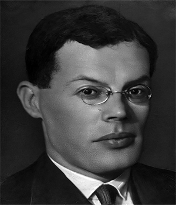
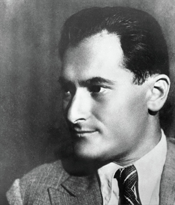
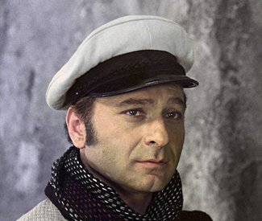
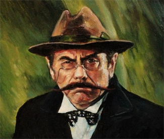
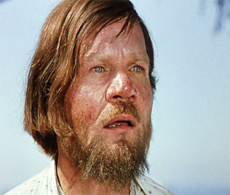

Nick Matsnev
Ильф
Илья́ Арно́льдович Ильф (при рождении Иехи́ел-Лейб Арьевич Фа́йнзильберг; 3 (15) октября 1897, Одесса — 13 апреля 1937, Москва) — русский писатель, драматург и сценарист, фотограф, журналист. Значительная часть художественной прозы была написана Ильфом в соавторстве Евгением Петровым, в том числе романы «Двенадцать стульев» и «Золотой телёнок», книга «Одноэтажная Америка», ряд киносценариев, повести, очерки, водевили. Произведения Ильфа и Петрова были переведены на десятки языков мира, выдержали большое количество переизданий, неоднократно экранизировались и инсценировались.
Петров
Евге́ний Петро́в (настоящее имя — Евгений Петрович Катаев; 30 ноября [13 декабря] 1902, Одесса — 2 июля 1942, Ростовская область) — русский писатель, сценарист и драматург, журналист, военный корреспондент. Соавтор Ильи Ильфа, вместе с которым написал романы «Двенадцать стульев», «Золотой телёнок», книгу «Одноэтажная Америка», ряд киносценариев, повести, очерки, водевили. Брат писателя Валентина Катаева. Отец кинооператора Петра Катаева и композитора Ильи Катаева.



Авантюрист, сын турецко-поданного
Судя по всем описаниям, Остап — довольно привлекательный молодой мужчина с интересной внешностью. Он высокий, атлетического телосложения, кожа смугловатого оттенка, глаза голубые (реже — карие или серые), волосы иссиня-чёрные. Несмотря на бедность и незнатное происхождение, Остап весьма умён, сообразителен, смекалист. Обаятелен, нравится женщинам разных возрастов. Обладает прекрасными актёрскими способностями, отменно врёт. Неприхотлив в еде и в жилье — скорее всего, из-за молодости.

Бывший уездный предводитель уездного дворянства
Полное имя героя – Ипполит Матвеевич Воробьянинов. На момент начала повествования ему было 52 года. Совсем непривычный для себя образ жизни бывший предводитель дворянства начал вести после знакомства с авантюристом Остапом Бендером. Киса Воробьянинов получил от него профсоюзную книжку, где значилось: «член союза совторгслужащих». Отныне Воробьянинов представляется Конрадом Михельсоном. По поддельным документам ему 48 лет, он холост, является членом союза с 1921 года.

Священник, предприниматель
Претендент на спрятанные сокровища — «конкурирующая организация». Желание обрести сокровища заставляет героя странствовать по городам и противостоять проискам конкурентов. Довольно быстро его поиски уходят по ложному следу, и его линия отделяется от линии главных персонажей. После долгого пребывания на скалах сходит с ума. В первоначальной, полной версии романа «Двенадцать стульев» (1928) приведены подробности из прошлой жизни отца Фёдора и его предпринимательской деятельности, не вошедшие в окончательную редакцию.
Роман состоит из трёх частей. В первой, озаглавленной «Старгородский лев», служащий загса уездного города N Ипполит Матвеевич Воробьянинов узнаёт от умирающей тёщи о бриллиантах, спрятанных в одном из стульев гамбсовского гостиного гарнитура. Поиски сокровищ приводят героя в Старгород, где Воробьянинов знакомится с «великим комбинатором» Остапом Бендером, охотно соглашающимся принять участие в «концессии». Туда же направляется их конкурент — священник церкви Фрола и Лавра отец Фёдор Востриков, получивший информацию о драгоценностях во время исповеди мадам Петуховой. Во второй части, названной «В Москве», искатели приключений перемещаются в советскую столицу. Во время аукциона, состоявшегося в музее мебели, выясняется, что накануне Ипполит Матвеевич потратил деньги, предназначенные на приобретение десяти предметов орехового гарнитура. Теперь внимание компаньонов сосредоточено на новых владельцах стульев — инженере Щукине, остроумце Изнуренкове, сотрудниках газеты «Станок», служащих театра Колумба. В третьей части («Сокровище мадам Петуховой») Бендер и Воробьянинов отправляются с театром Колумба на тиражном пароходе в рейс по Волге. Погоня за сокровищами сопряжена с трудностями: героев выгоняют с парохода «Скрябин»; они навлекают на себя гнев шахматистов из города Васюки; Ипполит Матвеевич просит милостыню в Пятигорске. Тем временем отец Фёдор движется другим маршрутом; точкой пересечения конкурентов становится Дарьяльское ущелье.
“Время, которое у нас есть, — это деньги, которых у нас нет.”
“Может быть, тебе дать еще ключ от квартиры, где деньги лежат?”
“Почём опиум для народа?”
“Половина моя, половина наша!”
“Заграница нам поможет.”
“Заседание продолжается, господа присяжные заседатели.”
“Знойная женщина — мечта поэта.”
“Какие деньги? Вы, кажется, спросили меня про какие-то деньги?”
“Киса, можно спросить вас, как художник художника? Вы рисовать умеете?”
“Командовать парадом буду я!”
“Вы чудак, Балаганов! Счастью не ведомо ожидание. Оно давно перелетело за океан и теперь греется на солнышке вблизи океана, напевая веселенькие мотивы. Америка – страна постоянного и всеобъемлющего счастья.”